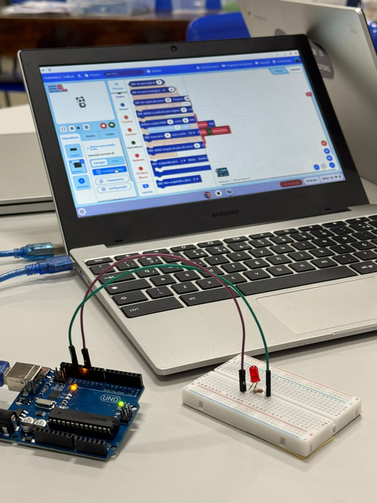
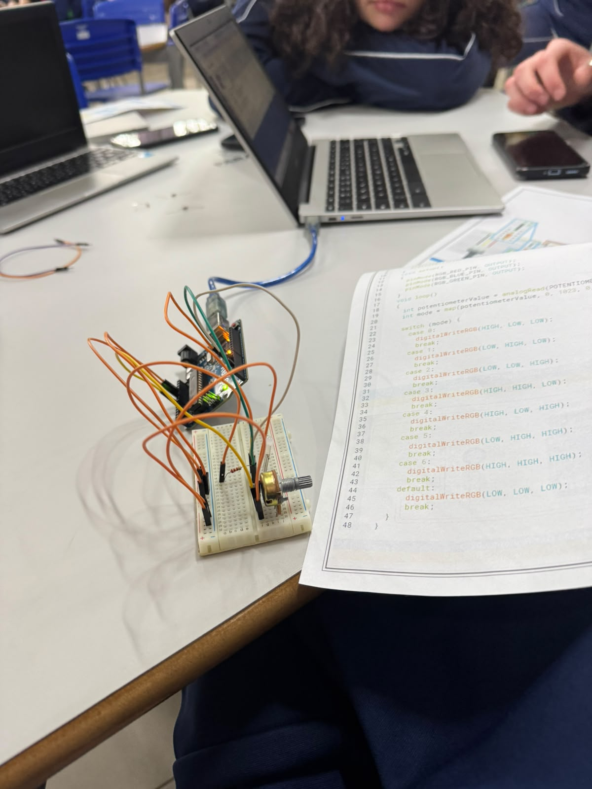
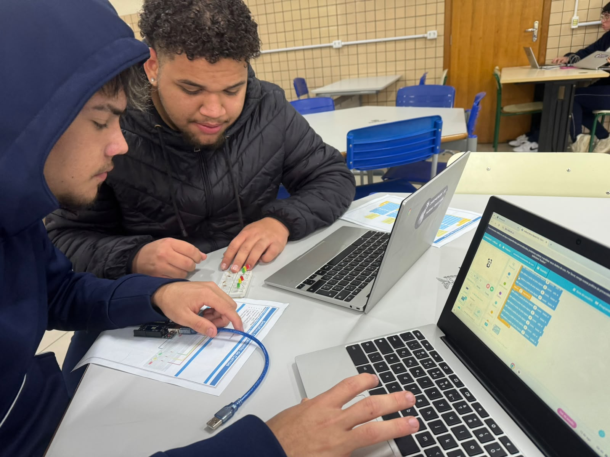
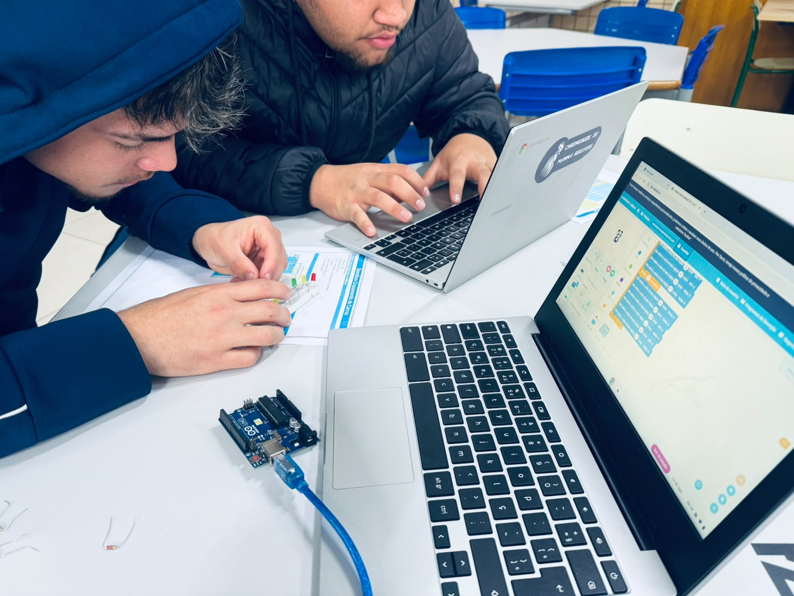
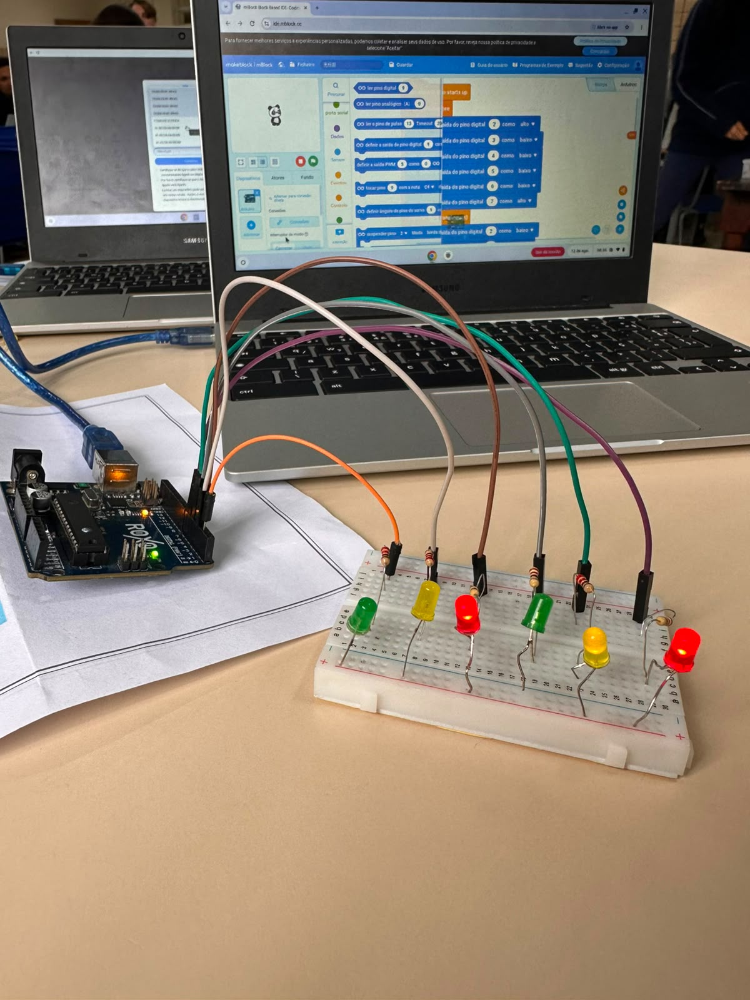

De longe
A imagem tende a ficar borrada.
CIÊNCIA + PROGRAMAÇÃO + ROBÓTICA
Quando a luz converge antes da retina, o que está longe perde nitidez.
Começar pelos cardsfoco antes da retina
PARTE PRINCIPAL
Uma pergunta na frente. Uma resposta curta no verso.
Clique ou pressione Enter para virar.
EM 20 SEGUNDOS
A imagem tende a ficar borrada.
O foco se forma antes da retina.
A lente reposiciona o caminho da luz.
UMA CÂMERA BIOLÓGICA
Primeira superfície que desvia a luz ao entrar no olho.
SIMULADOR
Mude a distância e compare as duas visões.
A luz chega focalizada à retina.
DESAFIO RÁPIDO
Simulação educativa: a experiência real varia entre pessoas.
ROBÓTICA + VISÃO
Nosso conceito demonstra correção óptica com foco regulável.
O foco se aproxima do plano da retina.
AGORA
Sensores, exames digitais e equipamentos automatizados apoiam a avaliação.
POSSIBILIDADE FUTURA
Lentes adaptativas e robôs poderão contribuir para soluções personalizadas.
Óculos e lentes de contato são correções comuns. Estratégias de controle da progressão exigem avaliação profissional.
REGISTROS DO PROTÓTIPO
Fotos do processo prático realizado no laboratório.

01
02
03
04
05QUIZ FINAL
FONTES UTILIZADAS